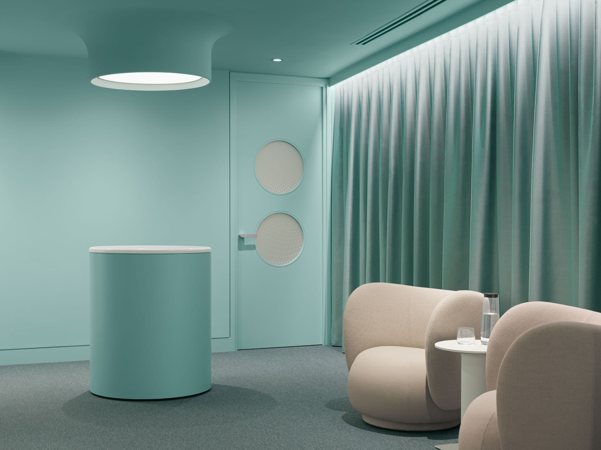

Orientação médica por destino para viagens internacionais mais seguras
Travel-ready health insights.
Before you even board.
Why travel medicine
Because every destination carries different health risks.
International travel exposes you to health risks that vary significantly by region, climate, infrastructure, and type of travel. Careful preparation reduces the likelihood of preventable illness and medical disruption abroad.
Our travel consultations focus on proactive risk reduction so you can travel with confidence and peace of mind.
Food- & Water-Borne Infections
Traveler's diarrhea, typhoid, hepatitis A, and other ingestion-related illnesses that vary by destination hygiene standards.
Mosquito-Borne Illnesses
Malaria, dengue, Zika, and other vector-borne diseases requiring destination-specific prevention strategies.
Vaccine-Preventable Diseases
Ensuring you're protected against region-specific infectious diseases through proper immunization planning.
Altitude-Related Conditions
Altitude sickness prevention and management for travel to high-elevation destinations and mountainous regions.
Region-Specific Environmental Risks
Climate extremes, sun exposure, wildlife hazards, and other environmental factors unique to your travel destinations.
Travel-Related Medication Planning
Ensuring you have appropriate medications, standby treatments, and an organized travel medical kit for your journey.
What we provide
Comprehensive, physician-led travel health planning.
01
Vaccination Strategy
Personalized review of your immunization history with clear recommendations based on your itinerary and risk level.
02
Malaria Risk Assessment
Destination-based evaluation and preventive prescriptions when appropriate, tailored to your specific travel plans.
03
Travel Illness Preparedness
Guidance and, when indicated, standby treatment options for common travel-related conditions such as traveler's diarrhea.
04
Altitude & Environmental Medicine
Prevention and management strategies for high-altitude or extreme-climate travel, including acclimatization guidance.
05
Chronic Condition Planning
Tailored advice for travelers managing cardiovascular, respiratory, metabolic, or other ongoing medical conditions abroad.
06
Medical Travel Kit Guidance
Curated recommendations on essential medications and supplies based on your destination and travel style.
How it works
Discreet, efficient, and fully online.
Our travel health consultations are designed for convenience without compromising on thoroughness or medical quality.
Step 1
Share your itinerary
Destinations, timing, style of travel, and planned activities.
Step 2
Provide your medical background
Relevant medical history, medications, allergies, and vaccination records where available.
Step 3
Private video consultation
A focused discussion with a physician trained in travel and preventive medicine.
Step 4
Your personalized travel health plan
Clear written guidance, vaccine recommendations, and prescriptions when appropriate and permitted.
Whenever possible, consultations should take place 4–8 weeks prior to departure to allow time for vaccinations and preventive measures.

Vaccination guidance
Clear, evidence-based vaccine recommendations.
Vaccine decisions are individualized and based on destination-specific risk, duration of stay, planned activities, and your personal medical profile.
Routine Adult Protection
Which immunizations are part of standard adult health maintenance and may need updating.
Itinerary-Specific Vaccines
Which immunizations are recommended for your specific destinations and travel activities.
Entry Requirements
Which immunizations may be required for entry into certain countries, including documentation guidance.
Local Vaccination Arrangement
If in-person vaccination is indicated, we guide you on arranging this safely and efficiently in your location.
Tailored to you
Travel medicine for every type of international traveler.
Leisure & Luxury Travel
Resort stays, cruises, and urban destinations with tailored health preparation for relaxed travel.
Adventure & Remote Travel
Trekking, safari, rural regions, and expedition-style trips requiring thorough medical preparation.
Frequent Business Travel
Ongoing support for professionals traveling across multiple regions with efficient, repeated consultation options.
Extended Stays & Relocation
Planning for long-term travel, second residences, or temporary relocation with comprehensive health strategy.
Travel with Medical Conditions
Specialized preparation for travelers with existing health concerns requiring careful medical planning.
Your medical team
Experienced physicians in travel and preventive medicine.
Our doctors provide careful, up-to-date guidance grounded in international travel health standards. Every consultation is personalized, thorough, and designed to support safe travel without unnecessary interventions.
Licensed physicians
Evidence-based international travel guidance
Personalized risk assessment
Clear documentation for your records
Support
Frequently asked questions.
Yes. All travel consultations take place via secure video. You can connect from anywhere in the world, making it easy to prepare for your trip regardless of your current location.
When medically appropriate and legally permitted, we can provide prescriptions related to travel health prevention or treatment, including malaria prophylaxis and standby treatments.
We provide medical recommendations and documentation. If vaccines are indicated, we guide you in arranging them locally through trusted providers in your area.
Ideally 4–8 weeks before departure to allow adequate time for vaccinations and preventive measures. However, we can still assist with shorter timelines and provide valuable guidance even close to your departure date.
Yes. We provide tailored planning to help reduce risk while traveling with ongoing health concerns, including cardiovascular, respiratory, metabolic, and other chronic conditions.
Thinking beyond this trip?
Our clinic also provides in-depth longevity and preventive health assessments focused on long-term wellbeing and healthy aging.